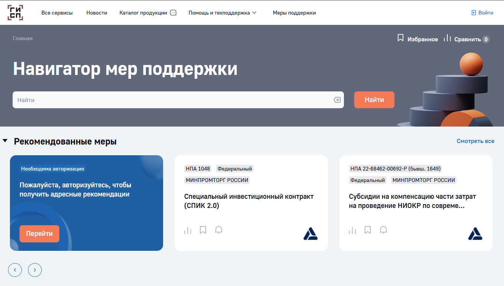
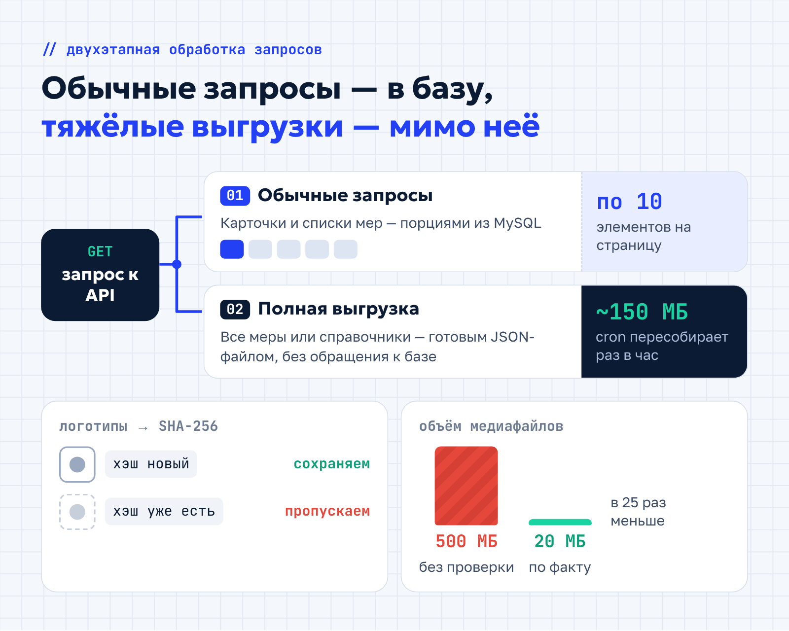
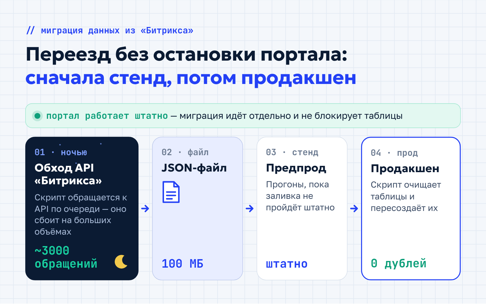
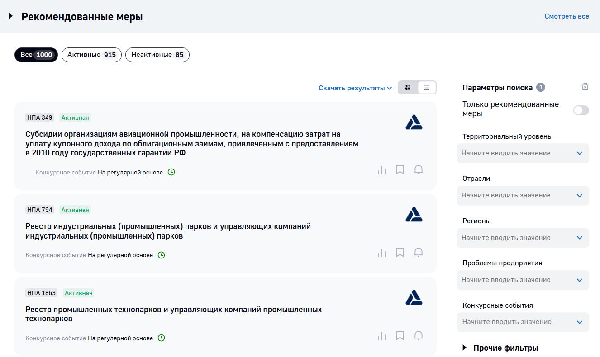
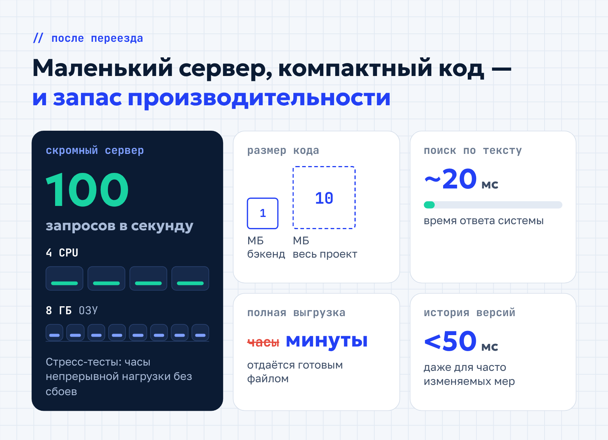

«Энсайн» · Кейс для блога · IT
Кейс «Энсайна» о переносе портала ГИСП на Python
«Энсайн»nsign.ru
«Энсайн» — московский IT-интегратор, работает с 2004 года. Разрабатывает сайты, корпоративные порталы и highload-сервисы на PHP и Python, ведёт сложные цифровые проекты как генподрядчик для органов власти, госкорпораций и бизнеса. В команде больше 50 штатных специалистов.
- Площадка
- Блог nsign.ru
- Формат
- Рерайт хабровской статьи в кейс для блога компании
- Год
- 2025
Технические статьи команды «Энсайна» на Хабре были написаны для разработчиков, а потенциальным заказчикам требовался формат кейса: какую задачу решила компания и что получил клиент. Переработала две такие статьи в кейсы для блога nsign.ru.
Задача
Рассказать в кейсе о переносе государственного портала ГИСП на новую платформу.
Решение
Сохранила точность технических деталей и сделала текст понятным для руководителя, который выбирает подрядчика.
Результат
Кейс опубликован в блоге nsign.ru и ведёт на страницу услуги.
Кейс ГИСП: миграция федерального портала с «Битрикса» на Python/Flask
Федеральный портал ГИСП помогает российским предприятиям получать государственную поддержку и ежедневно обслуживает тысячи пользователей. Его ключевой инструмент — «Навигатор мер поддержки»: в нём больше 3000 инициатив с привязкой к регионам и отраслям. Изначально система работала на PHP и «1С-Битриксе», но с ростом объёма данных и числа интеграций начались проблемы.
Страницы загружались всё медленнее, добавление новой функции занимало недели, а поддержка требовала всё больше ресурсов. Перед нами стояла задача: перевести портал на современный стек, сохранить все данные и не прерывать работу сервиса.
Мы провели миграцию с «Битрикса» и создали платформу, которая упростила доступ к информации и снизила операционные расходы. Рассказываем, как это было и чего удалось добиться.
Коротко о проекте
- Заказчик: федеральный портал ГИСП, «Навигатор мер поддержки»
- Было: PHP + «1С-Битрикс», более 3000 мер поддержки
- Стало: Python 3.6 + Flask + MySQL
- Результат: 100 запросов в секунду на 4 CPU и 8 ГБ ОЗУ, бэкенд — 1 МБ кода
Проблемы и ограничения старой архитектуры
«Битрикс» не справлялся с растущим объёмом данных. Единая таблица для хранения сущностей вызывала конфликты при масштабировании, а при пиковых нагрузках время отклика резко росло. Когда число мер превысило несколько тысяч, система начала «разваливаться»: простые операции выполнялись слишком долго, а под нагрузкой портал надолго зависал или вовсе давал сбой.

Мы рассматривали глубокую оптимизацию существующей платформы, но отказались от этой идеи по нескольким причинам. Главная — архитектура «Битрикса» не позволяла разделить данные или внедрить шардинг без полной перестройки.
Для справки: шардинг — способ разделить базу данных на несколько частей (шардов). Каждая хранит только часть данных и обрабатывается отдельно, за счёт чего растут скорость и масштабируемость.
Кроме того, клиент хотел расширить доступ и дать региональным администрациям возможность самим редактировать локальные меры. Дорабатывать ядро «Битрикса» под такую задачу в сжатые сроки было слишком сложно и рискованно — и могло обойтись дороже полного переезда.
Ещё одна проблема — справочники. Отрасли, регионы и меры в «Битриксе» были устроены иначе, чем во внешних МДМ-справочниках, с которыми портал должен был синхронизироваться. В итоге старая система мешала развитию портала, а поддержка обходилась всё дороже.
Решение: переход на современный стек
Мы решили не латать старую систему, а перенести портал на новый стек. Ниже — по порядку: какие технологии выбрали, как выстроили архитектуру, перенесли данные и подключили интеграции.
Выбор технологий
Мы выбрали разработку на Python с фреймворком Flask. Python давно и широко используют в корпоративной разработке: он прост в поддержке и удобен для работы с большими массивами данных. Свою роль сыграли и ограничения заказчика: государственная организация обязана использовать сертифицированное программное обеспечение, а в его комплекте был Python 3.6. Всю систему мы адаптировали под эту версию.
Почему Flask, а не Django? Django предлагает множество встроенных функций «из коробки», а Flask минималистичен: в проект попадают только нужные компоненты — например, WTForms для валидации форм и Flask-Login для авторизации — и ни строчки лишнего кода.
В качестве СУБД выбрали MySQL: связи между мерами поддержки, регионами и отраслями жёстко структурированы, и реляционная модель подходит для них лучше всего. Развёртывание это тоже упростило — на сервере уже работала система веб-аналитики Matomo на той же СУБД.
Архитектурные подходы
Чтобы тяжёлые запросы не перегружали систему, мы разделили процессы и ввели двухэтапную обработку. Каждый тип запроса идёт своим путём.
- Обычные запросы обрабатываются с пагинацией по 10 элементов.
- Полные выгрузки мер или справочников отдаются из статического JSON-файла, который cron-задача генерирует раз в час (около 150 МБ на 3000 мер).
На запрос полной выгрузки система просто отдаёт готовый файл и не обращается к базе, а сама генерация занимает пару минут. Отдельно оптимизировали медиафайлы: логотипы проверяются по хэшу SHA-256, и дубликаты не сохраняются.

Результат: объём медиафайлов сократился с 500 до 20 МБ, а тяжёлые выгрузки больше не нагружают базу данных и не мешают обычным запросам пользователей.
Процесс миграции данных
Выгрузку из «Битрикса» мы вынесли в ночной скрипт. Он последовательно обращался к API около 3000 раз и собирал данные в JSON-файл размером 100 МБ. Выгрузка шла всю ночь — API часто сбоило на больших объёмах, — зато миграция не мешала работе портала и не вызывала блокировок.

Для заливки в продакшен написали отдельный скрипт: он полностью очищает таблицы и пересоздаёт их, поэтому данные всегда актуальны и без дубликатов. Прежде чем запускать его на боевом портале, всё прогнали в предпродакшене и довели до штатной работы.
Работа с данными и интеграциями
Старые данные адаптировали вручную: перевели коды регионов на единый стандарт и объединили похожие записи в справочниках, где не совпадали уровни детализации — у одной и той же отрасли в двух системах могло быть разное число подразделов. Каждое расхождение обсуждали с клиентом и согласовывали изменения.

Неожиданной проблемой стали JSON-структуры мер поддержки. В некоторых комплексных инициативах было до 1 МБ текста с множеством вложенных условий и документов. Стандартное текстовое поле с лимитом 65 КБ обрезало данные, ломало структуру JSON и вызывало ошибки интерфейса. Решение — тип поля MEDIUMTEXT с объёмом до 16 МБ: все 3000 мер сохранились без потерь.
Для истории изменений мы отказались от десятков связанных таблиц в пользу простой схемы из двух шагов.
- Отдельная таблица истории хранит полный JSON-снимок меры на момент каждой публикации.
- При запросе версий система фильтрует записи по идентификатору меры и возвращает только нужный фрагмент.
Так проще отслеживать обновления, а доступ к версиям занимает до 50 миллисекунд даже для мер, которые меняются часто.
Интеграции с другими системами сделали без лишних сложностей: подключились к существующей авторизации заказчика через единый вход (SSO), отправку уведомлений построили на готовом брокере сообщений заказчика, а защиту от SQL-инъекций и XSS доверили его корпоративному WAF.
Результаты: рост производительности и экономия
Новая система уверенно держит нагрузку. На скромных ресурсах — 4 CPU и 8 ГБ ОЗУ — она стабильно обрабатывает 100 запросов в секунду, а стресс-тесты подтвердили отказоустойчивость: портал часами работал под непрерывной нагрузкой без сбоев.

Весь код бэкенда уместился в 1 МБ, а полный проект — в 10 МБ, поэтому его легко передавать и поддерживать. Поиск по тексту теперь занимает около 20 мс, а полная выгрузка данных — минуты вместо часов. А отказавшись от лицензий «Битрикса» и оптимизировав хостинг, заказчик стал меньше тратить на содержание портала.
Благодаря разработке на Flask клиент получил масштабируемую платформу, готовую к росту аудитории. Ключевые задачи — расширение доступа для регионов и синхронизация с внешними справочниками — решены.
Заключение
Наш опыт показывает: разработка корпоративных сервисов на минималистичном стеке подходит и для задач крупных государственных организаций. Портал ГИСП стал быстрее и надёжнее, а у заказчика появилась основа для его дальнейшего развития.
Если вы планируете миграцию или разработку веб-портала, оставьте заявку на нашем сайте — поможем оптимизировать вашу систему.